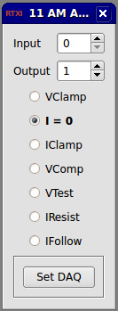

Requirements: None
Limitations: None

Amplifier control module to compensate for scaling properties of the AM Patch Clamp Amplifier 2400 controller. This module essentially acts as an interface that replicates functionality of the control panel, but in a manner specific to the controller's own functionality. More simply, it sets the I/O gains to appropriate values at the click of a button.
None
None